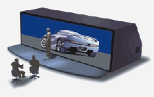
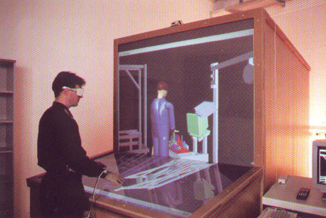
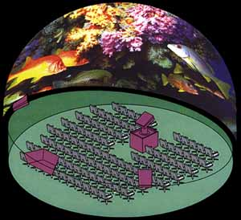
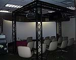

En realitat virtual, existeixen dos paradigmes bàsics de visualització:
Un casc estereoscòpic és un dispositiu que s'adapta al cap del participant i li permet veure el mon virtual en 3D. Els cascos estereoscòpics incorporen sensors que registren la posició i orientació del cap del participant per tal d'actualitzar el seu punt vista convenientment.
Els cascos estereoscòpics es poden classificar en dues categories segons si s'adapten i recolzen únicament al cap de l'usuari, o si s'han de subjectar amb les mans com uns binòculs:
Els HMD (Head-Mounted Displays) són cascos immersius que s'adapten al cap de l'usuari. Els HMD incorporen dues petites pantalles i els elements òptics necessaris per permetre l'enfocament. Cada pantalla està enfilada amb un ull i rep un senyal de vídeo diferent. Les tecnologies més habituals són LCD i CRT. Els HMD amb pantalles LCD tenen molt poca resolució, però són més lleugers.
Els HCD (Head-Coupled Displays) són similars als HMD però incorporen pantalles CRT molt pesades, per la qual cosa estan muntats sobre un suport mecànic i no es recolzen directament al cap de l'usuari. Aquest suport mecànic incorpora potenciòmetres a les articulacions per tal de registrar la posició i orientació del cap de l'usuari.
La figura mostra el sistema BOOM, molt conegut dintre dels HCD:
Els avantatges dels HMD són:
Alguns autors senyalen que els HCD són menys immersius que els HMD perquè és necessari fer servir les mans per canviar el punt de vista.
La principal limitació dels cascos estereoscòpics en general, ja siguin HMD o HCD, és el camp visual, que rarament supera els 60 graus.
En aquests sistemes, les imatges es projecten en una o més pantalles (normalment pantalles de projecció) les quals poden adoptar diferents configuracions segons el número, forma i disposició. Les configuracions comercials més utilitzades són:
Una CAVE (acrònim de Computer-Animated Virtual Environment, i a l'hora traducció de cova) consisteix en una habitació amb unes dimensions al voltant dels 3x3x3 m, en la qual de 2 a 4 parets laterals, el terra i/o el sostre són pantalles on es projecten imatges estereoscòpiques. El més comú és utilitzar retroprojecció per les parets (per evitar que el participant vegi la seva ombra a la pantalla) i projecció directa pel terra.
El nom de cova deriva de la paradoxa de La República de Plató en la que realitza un estudi de la percepció, realitat i il·lusió a través d'una analogia amb una persona que només pot veure el fons d'una cova i que ha de comprendre els objectes reals a partir solament de la informació que obté de les seves ombres.
Una taula estereoscòpica consisteix en una estructura on les imatges es projecten en una pantalla horitzontal en forma de taula. Quan les aplicacions de realitat virtual requereixen la manipulació d'objectes en l'espai virtual, és molt important el grau de coordinació entre la visió i els moviments de la mà, coordinació que és molt feble en els sistemes de visualització basats en cascos estereoscòpics, que requereixen utilitzar una representació virtual de la mà de l'usuari. Les taules estereoscòpiques són especialment útils en aplicacions de medicina, al no presentar els problemes de coordinació entre la vista i la mà.
Altres configuracions dels sistemes basats en projecció són l'anomenat StereoWall (amb pantalla vertical), l'holobench (dues pantalles en forma de "L"), els domus (pantalla esfèrica), i els reality room (pantalla cilíndrica):
|
 |
 |
 |
 |
|
Pantalla vertical (Panorama) |
Holobench |
Domus |
Reality Room |
Els sistemes basats en projecció tenen alguns avantatges respecte als cascos estereoscòpics: